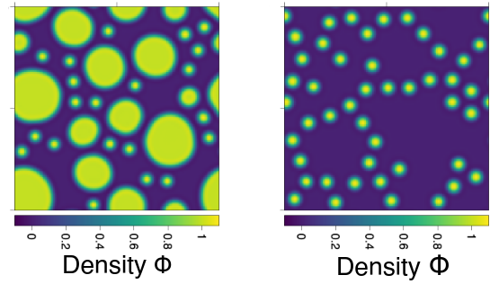
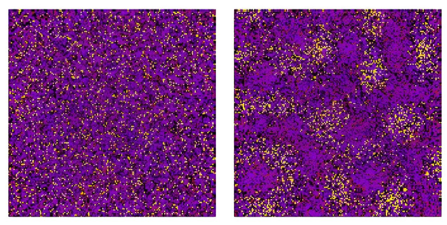

Postdoctoral researcher at the University of Luxembourg
I am interested in the physics of complex systems in and out of equilibrium. In particular, I try to understand the behaviour of fluid mixtures with many different chemical components, where the free energy landscape becomes high-dimensional and kinetics can become counter-intuitive. I approach these problems using theoretical tools such as statistical field theories, stochastic thermodynamics, random matrices, path integrals, and test predictions using numerical methods. I am currently very interested in optimizing heat dissipation in non-equilibrium mixtures, and in optimizing information storage/transfer using driven liquid-liquid phase separation.
See my publications on Google Scholar: here

My current projects include:
You can view my full CV here (PDF).
Email: filipe.dacunhathewes@uni.lu
LinkedIn: linkedin.com/in/filipe-thewes